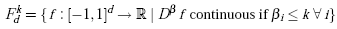
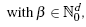
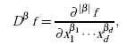
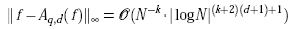
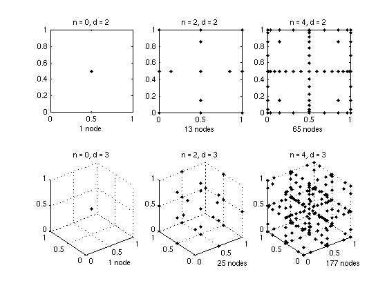

Polynomial basis functions
The piecewise multilinear approach can be significantly improved by using higher-order basis functions, such as the Lagrangian characteristic polynomials. The approximation properties of sparse grid interpolation techniques using polynomial basis functions have been studied extensively in [4], where error bounds depending on the smoothness of the function were derived.
From the one-dimensional case, we know that one should not use equidistant nodes for higher-order polynomial interpolation. This directly suggests using Chebyshev-based node distributions. Since an additional requirement of an efficient sparse grid algorithm is the nesting of the sets of nodes, the Chebyshev Gauss-Lobatto nodes are clearly the best choice, and are therefore also suggested in [4]. In this toolbox, this grid type (CGL) is selected by the value "Chebyshev" for the GridType property configurable with the spset function.
Since version 5.0.0, an additional polynomial sparse grid is available, the Gauss-Patterson sparse grid. This grid is based on the abscissae of Gauss-Patterson integration. The Gauss-Patterson formula is a nested quadrature rule that achieves a higher degree of exactness than integration at the Chebyshev Gauss-Lobatto nodes. See [9,10] for additional details.
For a detailed description of the polynomial basis functions implemented here, please see [3, ch. 3], and the references stated therein. Since version v3.2, the toolbox uses an improved construction algorithm employing the fast discrete cosine transform, see [6].
Accuracy of polynomial interpolation
From the error bounds of the univariate case, the following general error bounds depending on the smoothness of the objective function f are derived in [4]. For f in Fdk,
|  |  |
the order of the interpolation error in the maximum norm is given by
where Aq,d(f) denotes the sparse grid interpolant of f, and N denotes the number of grid points of the sparse grids of type CGL. Note that the number of grid points N of Aq,d(f) can be computed by spdim(q-d,d).
Number of grid points
The number of grid points of the CGL-grid is identical to the one of the Clenshaw-Curtis (CC) grid. The number of grid points of the Gauss-Patterson grid is identical to the one of the NB grid.
The following graph illustrates the sparse grids of level 0 and level 2 of the CGL-grid in two and three dimensions.
When should I use polynomial rather than linear basis functions?
There is obviously some trade-off between the accuracy gain and the computing time required to construct as well as interpolate the interpolant. Since the higher-order accuracy only becomes effective with increasing number of nodes, we recommend to use the polynomial approach only if the following two conditions are met:- The objective function to be recovered is known to be very smooth.
- High relative accuracies smaller than 10-2 are required.